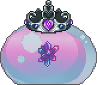
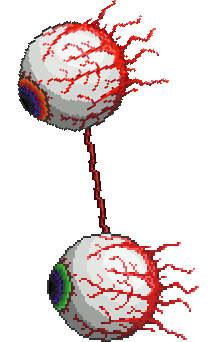
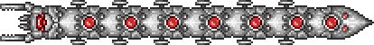
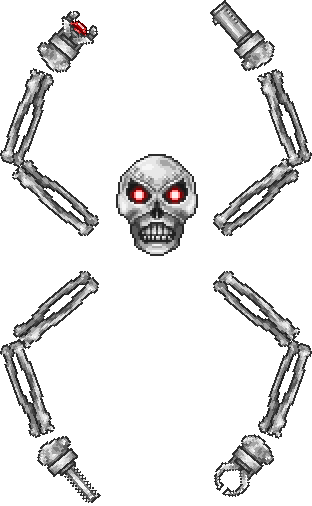
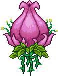
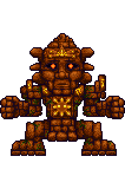
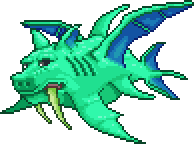
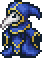
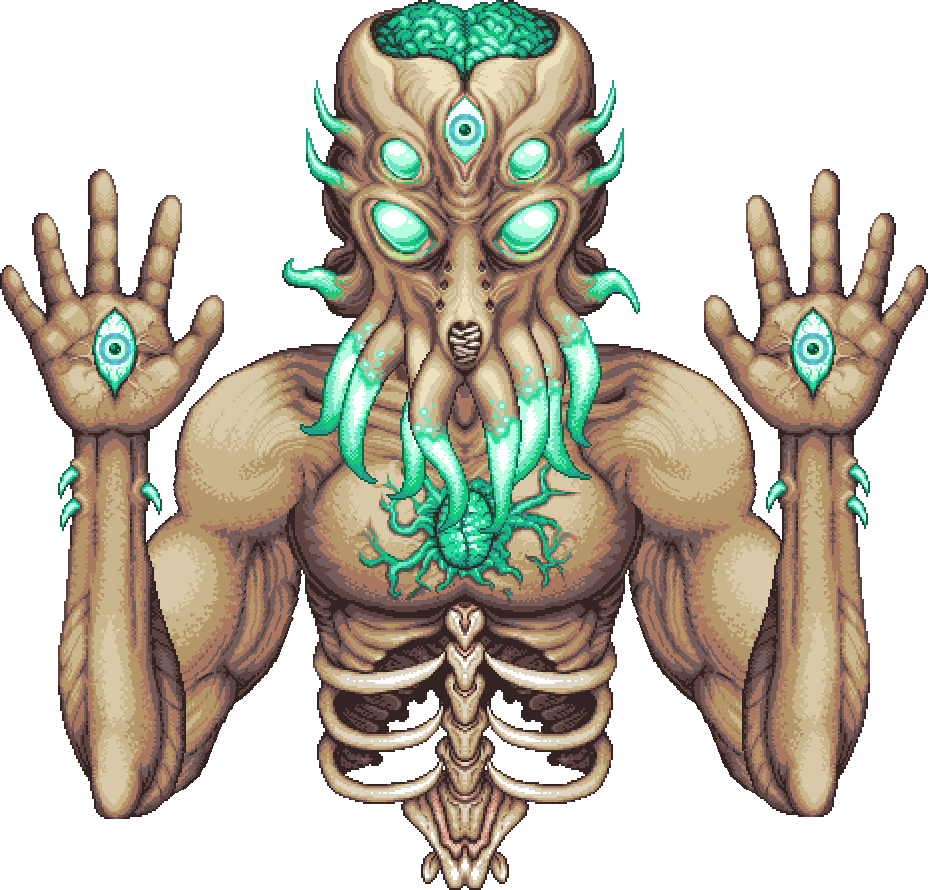

Queen Slime
Hardmode'un erken döneminde karşılaşılabilen isteğe bağlı bir boss'tur. İlk aşamada sıçrar; sonraki aşamada havalanıp slime yardımcıları ve mermiler kullanır.
Çağırma: Underground Hallow'da bulunan Gelatin Crystal'ı kullanın.
Can: 18.000 / 28.800 / 36.720

The Twins
Retinazer lazer atışlarına, Spazmatism ise hücumlara ve Cursed Flame saldırılarına odaklanır. İkisi de hasar aldıkça ikinci biçimlerine geçer.
Çağırma: Gece Mechanical Eye kullanın.
Can (Retinazer / Spazmatism): 20.000 / 23.000; Uzman: 30.000 / 34.500; Usta: 38.250 / 43.988
Loot'u son yenilen göz bırakır; ikisi de gün doğmadan yenilmezse kaçar.

The Destroyer
Uzun mekanik bir solucan olarak blokların içinden geçer. Gövdesinden lazerler ateşler; hasar alan parçaları Probe'lar çıkarabilir.
Çağırma: Gece Mechanical Worm kullanın.
Can: 80.000 / 120.000 / 153.000
Eater of Worlds'ün aksine parçalara bölünmez; Hallowed Bar ve Soul of Might düşürür.

Skeletron Prime
Skeletron'un mekanik biçimidir; dört uzvunda farklı silahlar taşır. Zafer için yalnızca kafasını yenmek yeterlidir, ancak uzuvları saldırı baskısını artırır.
Çağırma: Gece Mechanical Skull kullanın.
Başın canı: 28.000 / 42.000 / 53.550; toplam: 59.000 / 88.500 / 112.836
Baş dönerken savunması yükselir; gece bitmeden yenilmezse oyuncuya yönelip kaybolur.

Plantera
Üç mekanik boss yenildikten sonra Underground Jungle'da açan Plantera's Bulb ile uyanır. Tohumlar ve dikenli toplarla saldırır; ikinci aşamada daha hızlı ve saldırgan olur.
Çağırma: Underground Jungle'daki Plantera's Bulb'ı kırın.
Can: 30.000 / 42.000 / 53.550
Underground Jungle dışına çıkıldığında öfkelenir. Yenilmesi Temple Key verir ve Hardmode Dungeon düşmanlarını güçlendirir.

Golem
Jungle Temple'da karşılaşılan taş bir otomattır. Önce başı ve yumruklarıyla saldırır; başı yenilince havalanıp ateş topları ve ışınlar kullanır.
Çağırma: Plantera'yı yenip Temple Key ile tapınağa girin, ardından Lihzahrd Altar'da Lihzahrd Power Cell kullanın.
Toplam can: 60.000 / 90.000 / 114.749
İlk aşamada yumrukları yok etmek zorunlu değildir; ikinci aşamada gövde savunmasız kalır.

Duke Fishron
Ocean'da balık tutarken ortaya çıkan mutant bir deniz boss'udur. Hücumları arasında patlayan baloncuklar ve Sharknado'lar bulunur; uzman modunda üçüncü aşamaya geçebilir.
Çağırma: Ocean'da balık tutarken Truffle Worm'u yem olarak kullanın.
Can: 60.000 / 78.000 / 99.450
Hardmode başlar başlamaz çağrılabilir; ancak wiki, savaşın genellikle daha ileri aşama ekipmanı gerektirdiğini not eder.

Empress of Light
Hallow'da Plantera yenildikten sonra ortaya çıkan, hareketli ve mermi düzenlerine dayalı isteğe bağlı bir boss'tur. Gündüz çok daha tehlikeli hale gelir.
Çağırma: Hallow'da gece beliren Prismatic Lacewing'i öldürün.
Can: 70.000 / 98.000 / 124.950
Gündüz öfkelenip çok daha fazla hasar verir; yenilmesi ana oyun ilerlemesi için zorunlu değildir.

Lunatic Cultist
Dungeon girişindeki kültistleri yendikten sonra belirir. Büyüler, element saldırıları ve kopyalar kullanır; yenildiğinde Lunar Events başlar.
Çağırma: Golem'i yendikten sonra Dungeon girişindeki dört Cultist'i alt edin.
Can: 32.000 / 48.000 / 61.200
Sahte kopyalardan yanlışını vurmak Phantasm Dragon çağırabilir.

Moon Lord
Terraria'nın son boss'udur. Ellerindeki ve başındaki gözler yok edilince göğsündeki çekirdek açılır; ışın ve takip eden mermiler kullanır.
Çağırma: Dört Celestial Pillar'ı yenin veya Celestial Sigil kullanın.
Toplam can: 145.000 (Klasik)
Luminite her zaman düşer; oyun sonu zırh ve araçlarının üretiminde kullanılır.
